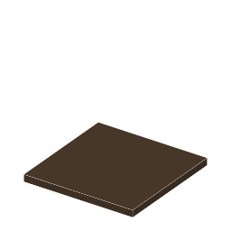

説明
①子ども 光で固まる瀝青を塗った板。日なたに置いて、何分か待ってみよう。
②学生 空の光がよく当たる昼に、少しずつ光で固まる（色が明るくなる、4段で完成）。ガラス越しでも固まるが、ブロックの下の影では固まらない。テレビン油を持って右クリックで洗うと、固まりきった板には像が残り、足りない板は全部溶けてピューター板が戻る。
③大人 光が当たった所の瀝青は橋かけされて溶剤に溶けなくなり、影の所は溶けて金属が出る。これはネガ型フォトレジストと同じしくみ：光の当たった所が残る。
④ガチ ニエプスの露光は、晴れた日に少なくとも8時間、何日もかかったという説もある ⚠️。感光が遅すぎたので、のちにダゲールの銀板写真（1839）に取って代わられた。
作り方
使い道
（このアイテムを使うレシピは無い）